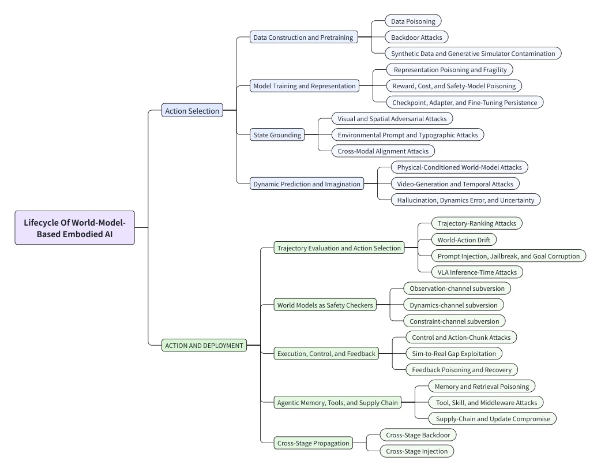

This review transforms the safety issues of world models from a 'black box' to a 'white-box lifecycle'. Although there are no new experiments, it clearly delineates the attack surface and thoroughly elucidates the 'predictive safety but actual danger' hallucination. The drawback is that it is too theoretical, difficult to implement, and defense schemes are mostly principled suggestions. World models are both shields and targets; this dual-edged sword attribute is accurately captured, but no specific 'panacea' for defense is provided. It reminds us not to merely focus on model accuracy, but on its trustworthiness. Furthermore, the article dissects the security risks of VLA and generative models in detail, but lacks quantitative evaluation, being more qualitative analysis, suitable as an introductory guide rather than a practical manual, as theoretical safety does not equal physical safety.
Existing work separates perception, planning, and safety. [15][16] are too broad, [20][21] are too scattered. As the prediction core, once the world model is compromised, physical actions become dangerous. A unified framework is needed. Existing reviews do not view world models simultaneously as attack targets and security mechanisms. Attacks are scattered across data, perception, and planning, lacking a full lifecycle perspective. Especially when the world model is used as a security checker, its own vulnerability leads to 'false safety certificates,' which is a key point ignored by existing research.
Proposes a lifecycle framework (Fig. 1). From data construction to long-term agent extension. Defines 7 security objects (state integrity, dynamic fidelity, etc.). Maps attacks to stages. Analyzes the risks of world models as security checkers. Specifically including stages such as data poisoning, backdoor, adversarial examples, state grounding, dynamic prediction, trajectory evaluation, execution feedback, etc. Each stage corresponds to specific security attributes, such as state integrity, dynamic fidelity, constraint compliance, etc. The article also discusses the risks of world models as security checkers, pointing out they may produce hallucinations of predictive safety but actual danger. Furthermore, the article reviews existing defense strategies, covering traceability, robust grounding, uncertainty-aware prediction, trajectory gating, feedback audit, and deployment assurance, providing systematic guidance for building secure world models.

Fig. 1: Lifecycle taxonomy of security threats in world-model-based embodied AI.
This paper has no new experiments. The main contribution is evaluation protocols and benchmark analysis. Discusses SafeBench, AttackVLA, etc. Emphasizes the risk of predictive safety but actual unsafety. The article reviews benchmarks and metrics in Section 6, proposing evaluation protocols for safety failures, including unsafe rollout acceptance rate, predictive safety but actual unsafe behavior, long-horizon cost, etc. These metrics aim to measure and mitigate world model-mediated physical risks, providing evaluation standards for subsequent research. Meanwhile, the article also analyzes the exploitation of the sim-to-real gap, pointing out that attackers can use differences between simulators and real environments to bypass safety detection, which poses challenges for actual deployment.